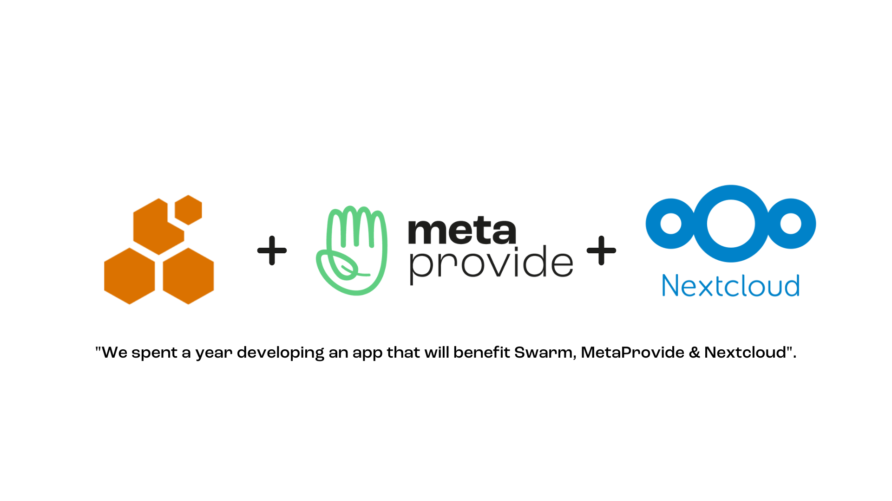
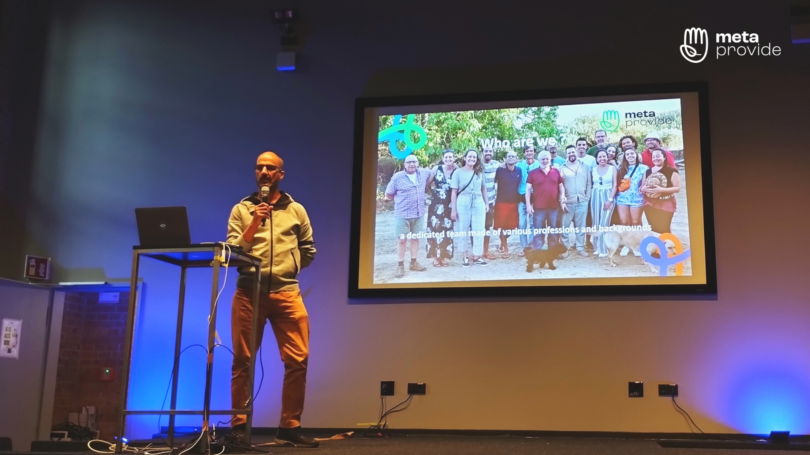
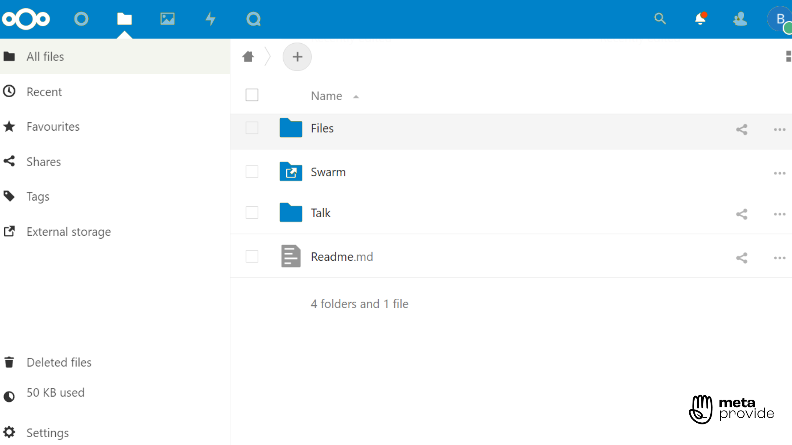

A month of trials and triumphs
We human beings, by nature, struggle with change. Whether good or bad, it's difficult to adapt to something unexpected in our lives and routines, no matter how much we want to. The month of September was full of changes and adaptations, so a rather delicate time, but also an important learning opportunity for everyone.
After the release of Adminly, we reached the end of phase 2 of our project. That's why we've decided on new goals and objectives to guide us through the end of the year. Even with a well-thought-out plan and strategy, surprises happen, but ultimately serve to strengthen and unite us as a team.
In the midst of this challenging situation, a great achievement emerged, which motivated and inspired the entire Meta team. So, of course, we're proud to finally share this latest triumph with you and our entire community.
We have launched the Swarm Nextcloud plugin!
For 3+ years, we've been using Nextcloud as our working environment and the backend of the products we're developing for our customers. Adminly is one such product.
We spent one year developing this software, a year full of technical challenges. But what we achieved will have a great impact on Nextcloud, Swarm, and of course, MetaProvide!
So what is this software?
In a nutshell, we made Nextcloud compatible with Swarm, bringing you decentralised file storage connected to the blockchain.
The plugin creates a bridge between Nextcloud's server-based platform and Swarm's decentralised storage connected to the blockchain. This connection provides powerful storage and backup solutions, decreases reliance on central servers, and reduces the risk of attacks and downtime, while increasing redundancy, security, and privacy.
What are the advantages for Nextcloud and Swarm?
We saw great potential in joining these two platforms through a plugin because both have competitive, complementary advantages which ultimately benefit everyone.
For Swarm, we foresee new users and also self-hosters becoming node operators; generating greater sales of BZZ (Swarm Tokens).
For Nextcloud, there's the benefit of connecting to the crypto & blockchain world, while the app is also a great feature of Nextcloud 25. Moreover, this is the first step for Nextcloud and its users towards the bright future of gradual Web3.0 integration.

Why did MetaProvide decide to create this connection?
First of all, this was a gift to Viktor Trón, expressing our gratitude for his partnership with us. In addition to Viktor's generous support, Swarm recently offered MetaProvide a grant of S10,000 BZZ (DAI, which is crypto measured in USD).
Also, we were excited about creating a wholesome link between two awesome projects - NextCloud and Swarm - united through code. Be sure to stay tuned for the latest updates, as more collaboration is on the horizon.
Finally, we wanted to prove that, even with a small team, we can do something great with limited resources, demonstrating our growing capacity.
When will it be launched?
This plugin is available on the Nextcloud AppStore, just in time for the Nextcloud 25 release...so it's already out there!
We were able to launch before attending the Nextcloud Berlin Conference (October 1st-4th), which was a huge achievement for MetaProvide!
A big thank you goes out to our tech team for giving so much of themselves to this project. Their dedication allowed us to deliver on a tight, but important deadline. Thank you tech team!
Nextcloud Berlin Conference: we were there!
This past weekend, as mentioned above, some of our team members attended the Nextcloud Berlin Conference.
Our tech team was joined by our founder, Bjorn Magalhães, and our HR Manager, Marcela Munoz. Together they networked, delved deeper into this technological world, and presented MetaProvide's achievements.

On our second day at the event, we had the opportunity to take the stage with team member, Ron Trevor, to introduce MetaProvide and our latest release: the Swarm Nextcloud plugin. Ron, who wrote major parts of the app code, explained the basic use of the plugin with Swarm Tokens (BZZ) used in the incentivised system running on the Swarm bee-nodes.
Watch his presentation on "Decentralized sovereign cloud storage on the Nextcloud App Store!". Please note: By a slip of the tongue an error crept into the talk. Viktor Tron was an early developer of Ethereum before creating Swarm (but he was not a founder of Ethereum).
It was an incredible weekend, with lots of knowledge exchanged, which will make all the difference to our team and the future of our great project, as it continues to grow.

We hope you've enjoyed this new edition of our blog! More than ever, we're ready to share with you about us, our story, team and everything we're working on to try to improve our world.
In case you've got any questions, ideas or suggestions, get in touch with us via email. Our Marketing and Branding Manager, giuliana.bueno@metaprovide.org, would love to hear from you!
If you'd like to discuss potential partnerships, donations or investments with MetaProvide, please contact our fundraiser via email: fundraising@metaprovide.org
See you at the next edition!